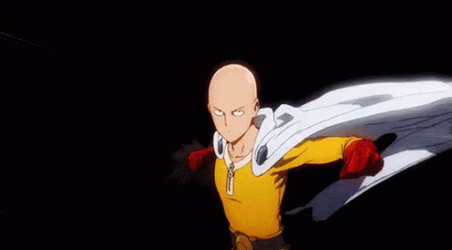
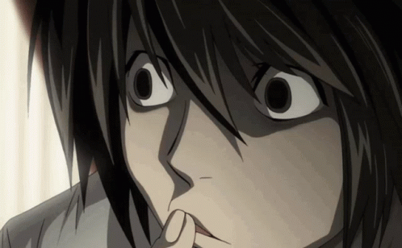
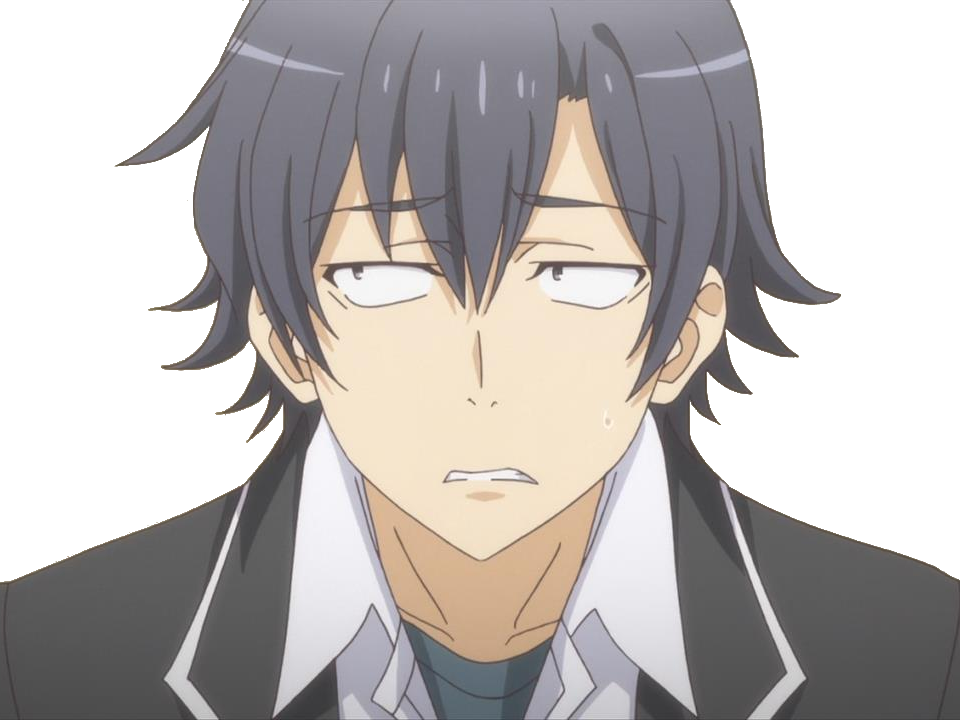
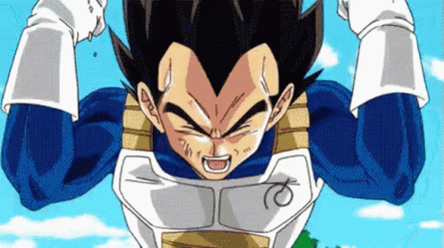
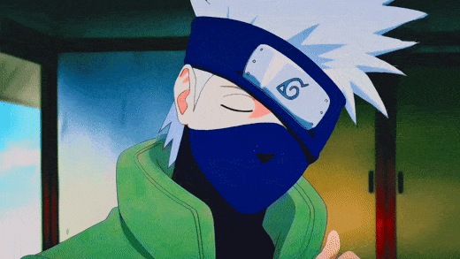
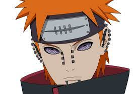

Ichigo Kurosaki is the main protagonist of the Bleach franchise. He is a teenager that possessed the ability to see spirits. He would eventually gain the powers of a Shinigami from Rukia Kuchiki, becoming a Substitue Shinigami that fights to protect those he cares for against the evil forces that threaten them.
------------

Thorfinn
Thorfinn, as a teenage warrior in Askeladd's company, whom he hates for slaying his father Thors and has sworn to kill him in a duel. Though, things take a toll further on. ps:the vinland saga is a masterpiece for real.
------------

Guts
Guts, renowned as the "Black Swordsman", is a former mercenary and branded wanderer who travels the world in a constant internal struggle between pursuing his own ends and upholding his attachments to those dear to him.
------------

Johan Liebert
He is the "monster" of the title and the principal antagonist of the series. He is called a monster, the devil himself. Charismatic, cunning, manipulative and deceitful; even cold, cruel and fundamentally incapable of empathy.
------------

Edward Elric
The youngest State Alchemist in the history of the fictional country of Amestris. His left leg was divinely severed in a failed attempt to resurrect his dead mother, and then his right arm was taken in exchange for his brother's soul.
------------

Yoriichi Tsugikuni
He is the strongest Demon Slayer to have ever existed. He is also the inventor of Breathing Styles, being the one who created the first ever Breathing Style that would eventually become the Hinokami Kagura used by Tanjiro Kamado and members of the Kamado Family.
------------

Saitama
Saitama (サイタマ, Saitama) is the main protagonist of the series and the titular One-Punch Man. He is currently the most powerful being to exist in the series. Saitama faces a self-imposed existential crisis, as he is now too powerful to gain any thrill from battle.[
------------

Naruto Uzumaki
Naruto Uzumaki is a determined, energetic, and loyal ninja with a dream of becoming Hokage and gaining recognition from his peers.
------------

Light Yagami
Light Yagami is the main protagonist of the Death Note series. Light is characterized as hardworking, talented, and a natural genius.
------------

L Lawliet
L Lawliet from Death Note is one of the most recognizable anime characters of all time. L is brilliant, but he certainly has his share of odd tendencies, such as his sweet tooth and infamous sitting posture. He's surrounded by intrigue, so there's no question why he's one of the most popular anime characters of all time.
------------

Eren Yeager
Eren was best described as hardheaded, strong-willed, passionate, and impulsive, which are attributes of both his strong determination to protect mankind and, eventually, his equally strong determination to escape the Walls.
------------

Itachi Uchiha
Itachi Uchiha (うちはイタチ, Uchiha Itachi) was a shinobi of Konohagakure's Uchiha clan who served as an Anbu Captain. He later became an international criminal after murdering his entire clan, sparing only his younger brother, Sasuke.
------------

Madara Uchiha
Madara Uchiha (うちはマダラ, Uchiha Madara) was the legendary leader of the Uchiha Clan. He founded Konohagakure alongside his childhood friend and rival, Hashirama Senju, with the intention of bringing about an era of peace.
------------

Sano Manjiro
Manjiro "Mikey" Sano is the deuteragonist-turned-final antagonist of the series Tokyo Revengers. He is a founding member and President of the Tokyo Manji Gang,Mikey is the strongest character in the entire show.
------------

Sasuke Uchiha
Sasuke Uchiha is a skilled, powerful, and complex ninja driven by a desire for vengeance and haunted by tragedy. He's brooding, conflicted, aloof, and ruthless.
------------

Sakura Haruno
Sakura Haruno is a strong, intelligent, and determined ninja with impressive medical skills, a kind heart, and a fierce loyalty to her friends.
------------

Minato Namikaze
Minato Namikaze, also known as the Fourth Hokage, was a legendary ninja with incredible speed, intelligence, and bravery, and a profound sense of duty.
------------

Tanjiro Kamado
Tanjiro Kamado is a kind-hearted, determined demon slayer with incredible swordsmanship skills and an unwavering dedication to protecting his loved ones.
------------

Zenitsu Agatsuma
Zenitsu Agatsuma is a skilled but cowardly demon slayer with lightning-fast swordsmanship and a unique ability to unleash powerful attacks while asleep.
------------

Inosuke Hashibira
Inosuke Hashibira is a wild and aggressive demon slayer with incredible strength, keen senses, and a fierce determination to prove his strength.
------------

Shinchan Nohara
He is 5 years old and yet acts overtly mature. In general, he is brutally honest, highly curious, and has no shame whatsoever. Ironically, there have been several instances in which Shinnosuke's own crazy antics actually solved the problems of those around him.
------------

Muzan Kibutsuji
Muzan Kibutsuji is a sadistic, immortal demon with incredible strength, the ability to create other demons, and an unquenchable thirst for power.
------------

Monkey D. Luffy
Monkey D. Luffy is the main protagonist of the One Piece anime and manga series, known for his rubber-like powers and his determination to become the Pirate King.
------------

Roronoa Zoro
Roronoa Zoro is a swordsman and member of the Straw Hat Pirates in the One Piece series, known for his three swords style and unwavering loyalty to his captain.
------------

Yuji Itadori
Yuji Itadori, a kind-hearted teenager, joins his school's Occult Club for fun, but discovers that its members are actual sorcerers who can manipulate the energy between beings for their own use.
------------

Levi Ackerman
Levi is a skilled soldier known for his clean-freak tendencies and exceptional combat skills. He's the captain of the Survey Corps' Special Operations Squad and is fiercely dedicated to protecting humanity from the Titans.
------------

Genos
Genos (ジェノス, Jenosu) is the deuteragonist of One-Punch Man. He is a 19-year-old cyborg and the disciple of Saitama.he is given the name Demon Cyborg (鬼おにサイボーグ, Oni Saibōgu) and is currently S-Class Rank 14.
------------

Hikki Hachiman
Hikki Hachiman is a fictional character from the light novel series "My Youth Romantic Comedy Is Wrong, As I Expected." He's a cynical and intelligent high school student who avoids socializing and instead spends his time writing essays on life and society.
------------

Satoru Gojo
Satoru Gojo is a powerful sorcerer and teacher in the anime "Jujutsu Kaisen", known for his laid-back personality and iconic blindfold that seals his true strength.
------------

Goku
Goku is a powerful Saiyan warrior from the Dragon Ball series known for his incredible strength, speed, and fighting ability. He is kind and always fights for what he believes is right, with his signature move being the Kamehameha.
------------

Kaneki Ken
Kaneki Ken is the protagonist of the popular anime series "Tokyo Ghoul". Kaneki is a shy and introverted college student who is passionate about literature. After an encounter with a ghoul named Rize Kamishiro, Kaneki is transformed into a half-ghoul.
------------

Baki Hanma
Baki Hanma is the main protagonist of the manga and anime series "Baki the Grappler" and its sequels. He is a young and talented martial artist who strives to become the strongest fighter in the world.
------------

Vegeta
Vegeta, also referred to as Prince Vegeta is a fictional character in the Dragon Ball.Vegeta is the prince of an extraterrestrial warrior race known as the Saiyans. He is extremely arrogant, proud and hardworking; he often refers to his heritage and royal status throughout the series, but can also have a destructive temper.
------------

Kakashi
It's tough to outshine a lead character in his own series, but Kakashi pulled it off. He's a complex character, with an iconic design and a laid-back attitude that just exudes cool.
------------

Kakashi
It's tough to outshine a lead character in his own series, but Kakashi pulled it off. He's a complex character, with an iconic design and a laid-back attitude that just exudes cool.
------------

Levi Ackerman
Levi Ackerman from Attack on Titan is widely considered one of the best shonen heroes of all time. He's humanity's strongest soldier, as well as the Captain of the Scouting Legion.
------------

Sailor Moon
Sailor, originally translated as Pretty Soldier Sailor Moon is a Japanese manga series. The reluctant teen heroine can be found snacking and napping as often as she's kicking cosmic butt, and that's part of the reason she's found such a long-lasting fandom.
------------

Meliodas
Meliodas is the captain of the Seven Deadly Sins, a powerful fighter known as the Dragon's Sin of Wrath, who protects his friends and the Kingdom of Liones while also being kind and perverted.
------------

Ash Ketchum
Ash Ketchum is a determined and enthusiastic trainer who aspires to become a Pokemon Master in the anime series Pokemon.
------------

Vinsmoke Sanji
"Black Leg" Sanji, born as Vinsmoke Sanji, is the cook of the Straw Hat Pirates and one of the Senior Officers of the Straw Hat Grand Fleet.
------------

Misa Amane
Misa Amane is a supporter of Kira who eventually becomes the Second Kira. series Death Note.
------------
Trafalgar D Law
Trafalgar D. Water Law, more commonly known as just Trafalgar Law and by his epithet as the "Surgeon of Death", is a pirate from North Blue and the captain and doctor of the Heart Pirates.
------------

Pain
Pain has a unique ability called the Rinnegan, which allows him to use a wide range of powerful techniques. With the Rinnegan, he can manipulate gravity, control souls, and even bring back the dead. He is the leader of akatsuki.
------------

Goku
It's tough to outshine a lead character in his own series, but Goku pulled it off. He's a complex character, with an iconic design and a laid-back attitude that just exudes cool.
------------

Koyomi Araragi
Araragi is an amazing character. This guy can save 100s of people by risking his life but still doesn't feel unfortunate about it.He is one of the best storytellers in anime protagonist history.
------------
Korosensei
A creature that appears helpless, something so ridiculous that you want to just squeeze him to death! Something that can suss out the vulnerabilities in other creatures with its tentacles, that can protect them, and lead them. That was the creature... no... the teacher... he wanted to become.
------------

Bakugo Katsuki
He is a man with skills just like Shoto and the essence of Hard work like Izuku. However, what makes him rank higher is the fact that his personality is the most fleshed out.
------------

Daisuke Kambe
Daisuke Kambe from "Millionaire Detective" is a suave and wealthy detective who uses his resources to solve high-profile cases while flaunting his extravagant lifestyle.
------------
Todoroki Shouto
Todoroki Shouto stole hearts in My Hero Academia, mostly due to his unique character design and innocent personality.
------------

Nami
Nami, also known as "Cat Burglar" Nami is a fictional character in the One Piece franchise created by Eiichiro Oda. She is based on Ann and Silk, two characters from Oda's previous manga Romance Dawn. She is introduced as a thief and pickpocket who possesses cartographical, meteorological, and navigational skills.